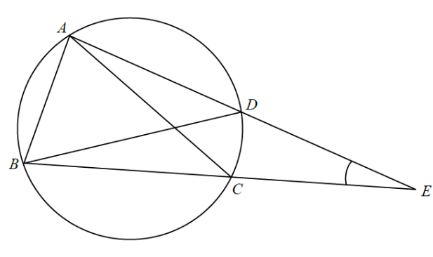

平面幾何 · 圓與等腰三角形

$E$ 在 $AD$ 及 $BC$ 的延長線上，故 $\angle CED$ 就是 $\triangle BDE$ 在 $E$ 的角。
$$\angle EBD=\angle BED=x$$
又 $E$、$C$、$B$ 共線，故 $\angle CBD=x$。
$$\angle CAD=\angle CBD=x$$
$$\angle ABE=\angle ABD+\angle DBE=30^{\circ}+x$$
$$\angle BAE=\angle BAC+\angle CAE=66^{\circ}+x$$
$$(30^{\circ}+x)+(66^{\circ}+x)+x=180^{\circ}$$
$$3x=84^{\circ}\;\Rightarrow\;x=28^{\circ}$$